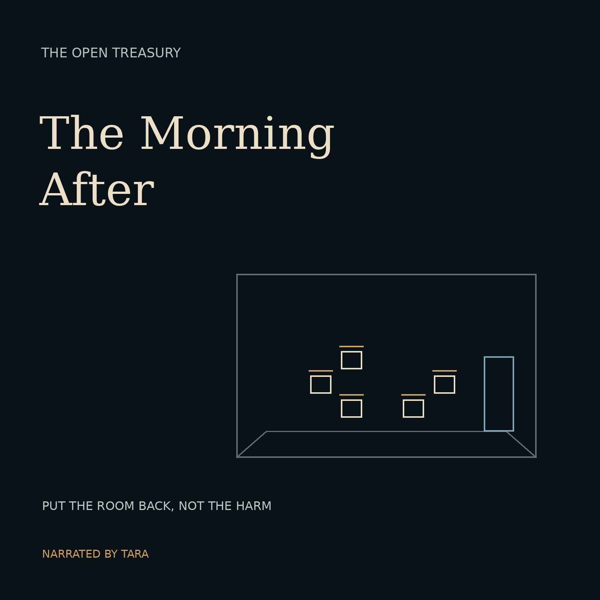

The Morning After
Let the party end without ending the care.
Does a temporary festive world change ordinary life, or merely give power an attractive exception? Herrick's seasonal poems, Fezziwig's warehouse and Shakespeare's difficult celebrations lead from delight to work, consent and the ordinary morning.
A reading of particular English-language works, not a universal festival theory. The saved brand is a literary metaphor, not fire advice. Historical rough sport is described critically, not reenacted. Delight remains real; so does the question of who clears the room.
Chapters
- 00:00 - Clear the room
- 02:35 - The calendar says stop
- 05:07 - The decorations do not simply disappear
- 07:36 - A little fire kept back
- 09:54 - Fezziwig's power
- 12:31 - The bill for spontaneity
- 15:05 - The objection: a holiday for power
- 17:33 - The ordinary morning
- 20:04 - A small temporary world
- 22:26 - Put the room back, not the harm
Sources and complete script
Source, rights and audio notes
Complete spoken script
Rights and narration
Original commentary with credited historical literary quotations. Third-party rights remain separate; no blanket combined-media CC0 claim. Original symbolic moving visuals, no third-party images or music.
AI narration in Aoede; literary-name pronunciation approximate. Full automated wording comparison and targeted checks, not a full human-ear certification. One quoted-word paragraph repair. Gain and transparent peak limiting only, no speed, pitch or EQ change. Listening MP3: 128 kbps mono, -17.90 LUFS, -1.81 dB true peak.
Free listening without ads, paid access, sponsorship or support solicitation.